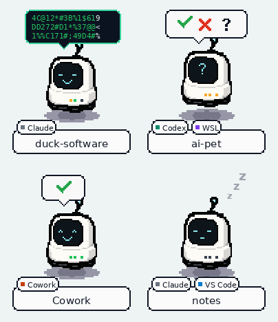

AIPet
A desktop pet for every AI session.
One little robot per Claude Code, Cowork or Codex session sits at the edge of your screen. It works while your agent works, jumps when it needs you, and naps when the job is done, so you can stop checking terminals.
Click a pet to jump to its session. For Claude Code you can even answer a permission prompt straight from the pet.
Windows and macOS builds are unsigned and may trigger OS or browser download warnings.

Glanceable agents
Know what every session is doing without switching windows.
Run three agents in three terminals and the question is always the same: which one is waiting for me? AIPet answers it from the corner of your eye.
One pet per session
Every session gets its own robot, named after its project folder. Pets keep their place on screen, and small badges say where the session runs: Claude, Cowork, Codex, WSL or VS Code. Only the robot catches clicks, so the pets never block what is behind them.
States you can feel
Working pets bob with a scrolling terminal bubble. A pet that needs you jumps with a question mark and a beep, and reminds you until you click it. Finished pets nap, then clear themselves after a timeout you choose.
Answer from the pet
When Claude Code asks for permission, click the bubble to see the exact command and choose Allow once or Deny. Claude Code's own prompt stays available and the first answer wins.
Click to jump
Clicking a pet brings its terminal or app window to the front. For the Claude Code VS Code extension it raises the right VS Code window, even when a parent folder is open there, and asks the extension to show that conversation.
Red means you
The tray icon on Windows and the Dock icon on macOS are the robot too: white while things run, red when a session needs you.
Make it yours
Robot, mole or cat; light or dark theme; a size slider; how long finished pets stay; how long the pet waits for an answer. Drag the pets anywhere, on any monitor.
Works with
Your agents, wherever they run.
AIPet listens through each tool's own hooks: small commands the agent runs at moments like "prompt sent", "tool used" or "finished". The setup window finds your installs and adds them for you, keeping your other settings and backing up every file first.
Downloads and installs
Download, run, pick your installs.
Builds are published on the GitHub Releases page: numbered versions, plus a rolling latest build for testing.
Windows
On the Releases page, download
AIPet.exe: a single program with nothing to install.
macOS (Apple Silicon)
On the Releases page, download AIPet-mac-arm64.zip and unzip it to get the app.
Latest build
The rolling pre-release built from the newest commit, for trying fixes before a version is tagged.
Source and docs
Read the README for every option, or run AIPet from source with Python.
Download and run
Pick the newest version on the Releases page. Start AIPet.exe, or unzip and open AIPet.app. A robot appears in the bottom-right corner, with an icon in the tray or Dock.
Allow the unsigned app
Windows: choose More info → Run anyway in SmartScreen. macOS: right-click the app and choose Open the first time, or use System Settings → Privacy & Security → Open Anyway.
Pick your installs
The setup window lists the Claude Code and Codex installs it found on this computer and in running WSL distros. Tick the ones to hook up; nothing changes before you press Install.
Cowork and Codex extras
For Cowork, upload the plugin zip AIPet builds (menu: hooks → Cowork). For Codex, run /hooks in Codex and trust the AIPet hooks.
Start a new session
Only sessions started after installing show up. Hover a pet for details, click it to jump, right-click for the menu.
Privacy
Everything stays on your computer.
AIPet has no account, no telemetry and no server. The hooks write small status files to a folder in your user profile, and the pet reads them from there.
Licensing
Free for everyone. Credit it, don't resell it.
Use, copy, modify and share AIPet freely, at home or at work. Forks and modified versions must credit AIPet by Duck Code. Selling AIPet, or a product built from it, needs a written agreement first.
Important notes
A cute robot with real permissions.
settings.json and Codex's hooks.json. Your other hooks and settings are kept, and Remove takes them out again.